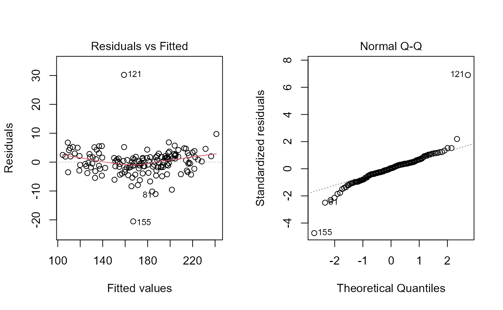

Computes direct and indirect effects in path analysis. An algorithm to select a set of predictors with minimal multicollinearity and high explanatory power is implemented.
path_coeff( .data, resp, by = NULL, pred = everything(), exclude = FALSE, correction = NULL, knumber = 50, brutstep = FALSE, maxvif = 10, missingval = "pairwise.complete.obs", plot_res = FALSE, verbose = TRUE, ... )
| .data | The data. Must be a data frame or a grouped data passed from
|
|---|---|
| resp | The dependent variable. |
| by | One variable (factor) to compute the function by. It is a shortcut
to |
| pred | The predictor variables, set to |
| exclude | Logical argument, set to false. If |
| correction | Set to |
| knumber | When |
| brutstep | Logical argument, set to |
| maxvif | The maximum value for the Variance Inflation Factor (cut point) that will be accepted. See the Details section for more information. |
| missingval | How to deal with missing values. For more information,
please see |
| plot_res | If |
| verbose | If |
| ... | Additional arguments passed on to |
An object of class path_coeff, group_path, or brute_path with
the following items:
Corr.x A correlation matrix between the predictor variables.
Corr.y A vector of correlations between each predictor variable with the dependent variable.
Coefficients The path coefficients. Direct effects are the diagonal elements, and the indirect effects those in the off-diagonal elements (column)
Eigen Eigenvectors and eigenvalues of the Corr.x.
VIF The Variance Inflation Factors.
plot A ggplot2-based graphic showing the direct effects in 21 different k values.
Predictors The predictor variables used in the model.
CN The Condition Number, i.e., the ratio between the highest and lowest eigenvalue.
Det The matrix determinant of the Corr.x..
R2 The coefficient of determination of the model.
Residual The residual effect of the model.
Response The response variable.
weightvar The order of the predictor variables with the highest weight (highest eigenvector) in the lowest eigenvalue.
If .data is a grouped data passed from group_by()
then the results will be returned into a list-column of data frames,
containing:
When brutstep = TRUE, first, the algorithm will select a set of
predictors with minimal multicollinearity. The selection is based on the
variance inflation factor (VIF). An iterative process is performed until the
maximum VIF observed is less than maxvif. The variables selected in
this iterative process are then used in a series of stepwise-based
regressions. The first model is fitted and p-1 predictor variables are
retained (p is the number of variables selected in the iterative process. The
second model adjusts a regression considering p-2 selected variables, and so
on until the last model, which considers only two variables. Three objects
are created. Summary, with the process summary, Models,
containing the aforementioned values for all the adjusted models; and
Selectedpred, a vector with the name of the selected variables in the
iterative process.
Olivoto, T., V.Q. Souza, M. Nardino, I.R. Carvalho, M. Ferrari, A.J. Pelegrin, V.J. Szareski, and D. Schmidt. 2017. Multicollinearity in path analysis: a simple method to reduce its effects. Agron. J. 109:131-142. doi: 10.2134/agronj2016.04.0196
Tiago Olivoto tiagoolivoto@gmail.com
# \donttest{ library(metan) # Using KW as the response variable and all other ones as predictors pcoeff <- path_coeff(data_ge2, resp = KW)#> Severe multicollinearity. #> Condition Number = 7865.84 #> Please, consider using a correction factor, or use 'brutstep = TRUE'.# Declaring the predictors # Create a residual plot with 'plot_res = TRUE' pcoeff2 <- path_coeff(data_ge2, resp = KW, pred = c(PH, EH, NKE, TKW), plot_res = TRUE)#> Weak multicollinearity. #> Condition Number = 40.232 #> You will probably have path coefficients close to being unbiased.# Selecting variables to be excluded from the analysis pcoeff3 <- path_coeff(data_ge2, resp = KW, pred = c(NKR, PERK, KW, NKE), exclude = TRUE)#> Severe multicollinearity. #> Condition Number = 5827.719 #> Please, consider using a correction factor, or use 'brutstep = TRUE'.# Selecting a set of predictors with minimal multicollinearity # Maximum variance Inflation factor of 5 pcoeff4 <- path_coeff(data_ge2, resp = KW, brutstep = TRUE, maxvif = 5)#> -------------------------------------------------------------------------- #> The algorithm has selected a set of 8 predictors with largest VIF = 3.346. #> Selected predictors: NR PERK EP CDED EL NKR TKW PH #> A forward stepwise-based selection procedure will fit 6 models. #> -------------------------------------------------------------------------- #> Adjusting the model 1 with 7 predictors (16.67% concluded) #> Adjusting the model 2 with 6 predictors (33.33% concluded) #> Adjusting the model 3 with 5 predictors (50% concluded) #> Adjusting the model 4 with 4 predictors (66.67% concluded) #> Adjusting the model 5 with 3 predictors (83.33% concluded) #> Adjusting the model 6 with 2 predictors (100% concluded) #> Done! #> -------------------------------------------------------------------------- #> Summary of the adjusted models #> -------------------------------------------------------------------------- #> Model AIC Numpred CN Determinant R2 Residual maxVIF #> MODEL_1 1127 7 13.67 0.0841 0.933 0.0669 2.59 #> MODEL_2 1125 6 12.26 0.1383 0.933 0.0670 2.46 #> MODEL_3 1126 5 12.05 0.1989 0.932 0.0683 2.31 #> MODEL_4 1251 4 6.66 0.4016 0.846 0.1544 1.98 #> MODEL_5 1308 3 3.05 0.7438 0.774 0.2258 1.34 #> MODEL_6 1329 2 2.23 0.8555 0.738 0.2616 1.17 #> -------------------------------------------------------------------------- #># When one analysis should be carried out for each environment # Using the forward-pipe operator %>% pcoeff5 <- path_coeff(data_ge2, resp = KW, by = ENV)#> Severe multicollinearity. #> Condition Number = 13958.438 #> Please, consider using a correction factor, or use 'brutstep = TRUE'. #> Severe multicollinearity. #> Condition Number = 8139.667 #> Please, consider using a correction factor, or use 'brutstep = TRUE'. #> Severe multicollinearity. #> Condition Number = 11334.047 #> Please, consider using a correction factor, or use 'brutstep = TRUE'. #> Severe multicollinearity. #> Condition Number = 12981.917 #> Please, consider using a correction factor, or use 'brutstep = TRUE'.# }